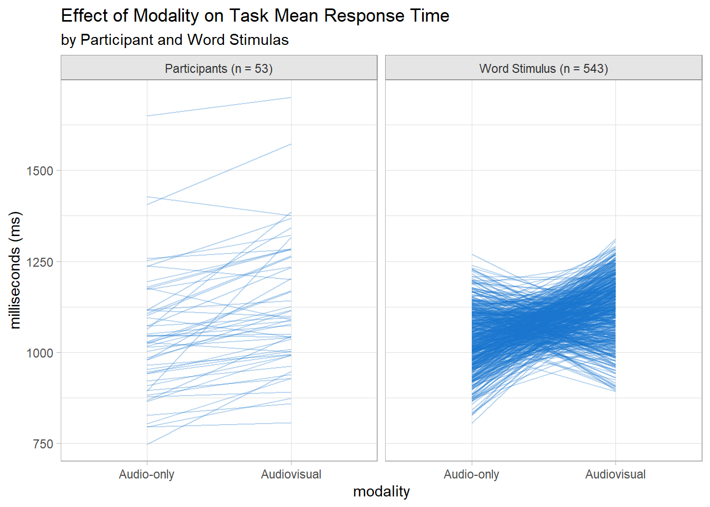

Suppose you run an experiment measuring how long it takes a person to complete one task while also completing one of two types of secondary tasks. Do the secondary task types have differing effects? This is normally a good candidate for a linear regression, but there is a twist: the participants in the study naturally vary in their ability to multitask. Plus, the participants each generate many data points for each of the two secondary tasks. This twist is a violation the independent observations assumption in linear regression. What to do? The solution is linear mixed effects models (LMMs).
We’ll use the dataset included in the supplemental materials in An Introduction to Linear Mixed-Effects Modeling(Brown 2021) to illustrate.
The study measured participant (PID) response time (RT) to a primary task while completing a secondary task repeating words presented in one of two modalities (modality): audio-only and audiovisual. The researchers hypothesized that the higher cognitive load associated with audiovisual stimulation would increase RT. The experiment is complicated by the fact that each participant performed the experiment repeatedly with varying words (stimulus, stim) form each modality.
There were 53 participants and 543 words. The initial summary table suggests audiovisual modality does indeed retard response times over audio-only.
PID and stim are important covariates because it is plain to see that humans differ in their ability to multitask, and words vary in difficulty.
Show the code
bind_rows(Participants =summarize(mdl_dat, .by =c(modality, PID), M =mean(RT)),Stimulus =summarize(mdl_dat, .by =c(modality, stim), M =mean(RT)),.id ="Factor") |>mutate(Factor =case_when( Factor =="Participants"~glue("Participants (n = {n_PID})"), Factor =="Stimulus"~glue("Word Stimulus (n = {n_stim})") ),grp =coalesce(PID, stim) ) %>%ggplot(aes(x = modality)) +geom_line(aes(y = M, group = grp), alpha = .3, color ="dodgerblue3") +facet_wrap(facets =vars(Factor)) +labs(title ="Effect of Modality on Task Mean Response Time",subtitle ="by Participant and Word Stimulas",y ="milliseconds (ms)" )

3.1 The LMM Model
Mixed-effects models are called “mixed” because they simultaneously model fixed and random effects. Fixed effects are population-level effects that should persist across experiments. Fixed effects are the traditional predictors in a regression model. modality is a fixed effect. Random effects are level effects that account for variability at different levels of the data hierarchy. For example, in a study with students from different schools, the variation between schools would be random effects. PID and stim are random effects because they are randomly sampled and you expect variability within the populations.
The LMM represents the \(i\)-th observation for the \(j\)-th random-effects group as
Where \(\beta_0\) and \(\beta_1\) are the fixed effect intercept and slope, and \(u_j\) is the random effect for the \(j\)-th group. The \(u_j\) terms are the group deviations from the population mean and are assumed to be normally distributed with mean 0 and variance \(\sigma_u^2\). The residual term is also assumed to be normally distributed with mean 0 and variance \(\sigma_\epsilon^2\)
In our case, \(\beta_0\) and \(\beta_1\) are the fixed effects of modality. \(u_j\) would be the \(j\) = 53 levels of PID. There might also be an \(\eta_k\) term representing \(k\) = 543 word stimuli.
3.2 The lmer Engine
Fit an LMM with the lmer package. The pipes (|) in the formula indicate the value to the left varies by the variable to the right. 1 is the intercept (no interactions).
Linear mixed model fit by REML ['lmerMod']
Formula: RT ~ modality + (1 | PID) + (1 | stim)
Data: data
REML criterion at convergence: 302861.5
Scaled residuals:
Min 1Q Median 3Q Max
-3.3572 -0.6949 -0.0205 0.5814 4.9120
Random effects:
Groups Name Variance Std.Dev.
stim (Intercept) 360.2 18.98
PID (Intercept) 28065.7 167.53
Residual 67215.3 259.26
Number of obs: 21679, groups: stim, 543; PID, 53
Fixed effects:
Estimate Std. Error t value
(Intercept) 1044.449 23.164 45.09
modalityAudiovisual 82.525 3.529 23.38
Correlation of Fixed Effects:
(Intr)
modltyAdvsl -0.078
The Random effects section shows the variability in RT due to stim and PID. The variability among participants (PID sd = 168 ms) is much greater than the variability among words (stim sd = 19 ms).
The Fixed effects section shows audio-visual modality slows RT by 83 ms over audio-only.
The last section, Correlation of Fixed Effects, indicates there is a weak negative correlation between the intercept and the audio-visual modality effect, meaning when RT was higher, the effect of audiovisual was slightly less.
Model interactions between the fixed effect variable(s) and random effects variable(s) by changing the random intercept to the fixed effect variable so both the intercept and the slope can vary.
Linear mixed model fit by REML ['lmerMod']
Formula: RT ~ modality + (modality | PID) + (modality | stim)
Data: data
REML criterion at convergence: 302385.7
Scaled residuals:
Min 1Q Median 3Q Max
-3.3646 -0.6964 -0.0141 0.5886 5.0003
Random effects:
Groups Name Variance Std.Dev. Corr
stim (Intercept) 304.0 17.44
modalityAudiovisual 216.9 14.73 0.16
PID (Intercept) 28559.0 168.99
modalityAudiovisual 7709.0 87.80 -0.17
Residual 65258.8 255.46
Number of obs: 21679, groups: stim, 543; PID, 53
Fixed effects:
Estimate Std. Error t value
(Intercept) 1044.14 23.36 44.700
modalityAudiovisual 83.18 12.57 6.615
Correlation of Fixed Effects:
(Intr)
modltyAdvsl -0.178
This formulation includes random slopes for modality within PID and stim, meaning you’re accounting for differences in how each participant and stimulus responds to modality. Response times varied around 1,044 ms by sd = 17 ms for stim and sd = 169 ms for PID. The modality effect on response times varied around 83 ms by sd = 15 ms for stim and sd = 88 ms for PID. That last satistic means a participant whose slope is 1 SD below the mean would have a slope near zero - a modality effect of zero.
The added correlations in the Random effects section show how the intercept and slopes for modality vary together within each group. The 0.16 correlation between the stimuli and fixed-effect intercepts indicates that stimuli with longer response times in the audio modality tended to have more positive slopes (stronger positive audiovisual effect). The -0.17 correlation between the participant and fixed-effect intercepts indicates that participants with longer response times in the audio modality tended to have a less positive slope (weaker positive, or possibly even a negative, audiovisual effect).
The audio-visual modality slows RT by 83 ms over audio-only - same as in the first model. The REML criterion fell, so adding the random slopes for modality improved the fit.
3.3 Model Assumptions
The linear regression model assumptions apply here: the relationship between the predictors and the response is linear and the residuals are independent random variables normally distributed with mean zero and constant variance. Additionally, the the random effects intercepts and slopes are assumed to follow a normal distribution. Use residual plots to assess linearity, homoscedasticity, and independence. Use Q-Q plots to check the normality of residuals and random effects. Variance Inflation Factor (VIF) can help detect multicollinearity among predictors.
Use likelihood ratio test to determine whether predictors affect the response variable. Compare the fit to a model without the predictor of interest. The likelihood ratio test is usually performed with the anova function, but there is a better way. afex::mixed(method = "LRT") performs the test for all fixed effects variables in the model. In this case study we have only one.
The likelihood-ratio test indicated that the model including modality provided a better fit for the data than a model without it, \(\chi^2\)(1) = 32.4, p < .001.
A likelihood-ratio test indicated that the model including modality provided a better fit for the data than a model without it, \(\chi^2\)(1) = 32.4, p < .001. Examination of the summary output for the full model indicated that response times were on average an estimated 83.2 ms slower in the audiovisual relative to the audio-only condition (\(\hat{\beta}\) = 83.2, SE = 12.6, t = 83.2, SE = 6.6).
gtsummary::tbl_regression(fit_2)
Characteristic
Beta
95% CI1
modality
Audio-only
—
—
Audiovisual
83
59, 108
1 CI = Confidence Interval
3.6 Appendix: Comparison to OLS
You might consider just throwing PID and stim into a simple linear regression as covariates.
Or maybe pre-summarize the data by calculating the mean response time across all words by PID and modality, then run the regression controlling for just PID.
Show the code
x <-summarize(mdl_dat, .by =c(modality, PID), MRT =mean(RT))linear_reg() |>fit(MRT ~ modality + PID, data = x) |>tidy() |>filter(!str_detect(term, "^PID"))
Brown, Violet A. 2021. “An Introduction to Linear Mixed-Effects Modeling in r.”Advances in Methods and Practices in Psychological Science 4 (1): 2515245920960351. https://doi.org/10.1177/2515245920960351.
Source Code
# Mixed Effects Models```{r setup}#| include: falselibrary(tidyverse)library(glue)library(tidymodels)library(gtsummary)tidymodels_prefer()library(multilevelmod)library(ggResidpanel)theme_set( theme_light() + theme( plot.caption = element_text(hjust = 0), strip.background = element_rect(fill = "gray90", color = "gray60"), strip.text = element_text(color = "gray20") ))```Suppose you run an experiment measuring how long it takes a person to complete one task while also completing one of two types of secondary tasks. Do the secondary task types have differing effects? This is normally a good candidate for a linear regression, but there is a twist: the participants in the study naturally vary in their ability to multitask. Plus, the participants each generate many data points for each of the two secondary tasks. This twist is a violation the independent observations assumption in linear regression. What to do? The solution is *linear mixed effects models* (LMMs).We'll use the dataset included in the [supplemental materials](https://osf.io/v6qag/) in *An Introduction to Linear Mixed-Effects Modeling* [@Brown2021] to illustrate. ```{r}#| code-fold: false#| echo: truemdl_dat <- readr::read_csv("./input/mixed-effects-rt.csv", col_types ="cdcc") |>mutate(modality =factor(modality, levels =c("Audio-only", "Audiovisual")))glimpse(mdl_dat)```The study measured participant (`PID`) response time (`RT`) to a primary task while completing a secondary task repeating words presented in one of two modalities (`modality`): audio-only and audiovisual. The researchers hypothesized that the higher cognitive load associated with audiovisual stimulation would increase `RT`. The experiment is complicated by the fact that each participant performed the experiment repeatedly with varying words (stimulus, `stim`) form each modality.```{r}#| include: falsen_PID <-n_distinct(mdl_dat$PID)n_stim <-n_distinct(mdl_dat$stim)```There were `r n_PID` participants and `r n_stim` words. The initial summary table suggests audiovisual modality does indeed retard response times over audio-only.```{r}#| code-fold: true#| message: falsegtsummary::tbl_summary( mdl_dat,by = modality,include =-c(PID, stim),statistic =list(gtsummary::all_continuous() ~"{mean}, {sd}"))```<br>`PID` and `stim` are important covariates because it is plain to see that humans differ in their ability to multitask, and words vary in difficulty.```{r}#| code-fold: truebind_rows(Participants =summarize(mdl_dat, .by =c(modality, PID), M =mean(RT)),Stimulus =summarize(mdl_dat, .by =c(modality, stim), M =mean(RT)),.id ="Factor") |>mutate(Factor =case_when( Factor =="Participants"~glue("Participants (n = {n_PID})"), Factor =="Stimulus"~glue("Word Stimulus (n = {n_stim})") ),grp =coalesce(PID, stim) ) %>%ggplot(aes(x = modality)) +geom_line(aes(y = M, group = grp), alpha = .3, color ="dodgerblue3") +facet_wrap(facets =vars(Factor)) +labs(title ="Effect of Modality on Task Mean Response Time",subtitle ="by Participant and Word Stimulas",y ="milliseconds (ms)" )```## The LMM ModelMixed-effects models are called “mixed” because they simultaneously model fixed and random effects. Fixed effects are population-level effects that should persist across experiments. Fixed effects are the traditional predictors in a regression model. `modality` is a fixed effect. Random effects are level effects that account for variability at different levels of the data hierarchy. For example, in a study with students from different schools, the variation between schools would be random effects. `PID` and `stim` are random effects because they are randomly sampled and you expect variability within the populations.The LMM represents the $i$-th observation for the $j$-th random-effects group as$$y_{ij} = \beta_0 + \beta_1x_{ij} + u_j + \epsilon_{ij}$$Where $\beta_0$ and $\beta_1$ are the fixed effect intercept and slope, and $u_j$ is the random effect for the $j$-th group. The $u_j$ terms are the group deviations from the population mean and are assumed to be normally distributed with mean 0 and variance $\sigma_u^2$. The residual term is also assumed to be normally distributed with mean 0 and variance $\sigma_\epsilon^2$In our case, $\beta_0$ and $\beta_1$ are the fixed effects of `modality`. $u_j$ would be the $j$ = `r n_PID` levels of `PID`. There might also be an $\eta_k$ term representing $k$ = `r n_stim` word stimuli.## The lmer EngineFit an LMM with the lmer package. The pipes (|) in the formula indicate the value to the left varies by the variable to the right. 1 is the intercept (no interactions).```{r}#| code-fold: falsefit_1 <-linear_reg() |>set_engine("lmer") |>fit( RT ~ modality + (1| PID) + (1| stim), data = mdl_dat )summary(extract_fit_engine(fit_1))```The *Random effects* section shows the variability in `RT` due to `stim` and `PID`. The variability among participants (`PID` sd = `r broom.mixed::tidy(fit_1) |> filter(group == "PID", term == "sd__(Intercept)") |> pull(estimate) |> comma()` ms) is much greater than the variability among words (`stim` sd = `r broom.mixed::tidy(fit_1) |> filter(group == "stim", term == "sd__(Intercept)") |> pull(estimate) |> comma()` ms). The *Fixed effects* section shows audio-visual modality slows `RT` by `r broom.mixed::tidy(fit_1) |> filter(effect == "fixed", term == "modalityAudiovisual") |> pull(estimate) |> comma()` ms over audio-only.The last section, *Correlation of Fixed Effects*, indicates there is a weak negative correlation between the intercept and the audio-visual modality effect, meaning when `RT` was higher, the effect of audiovisual was slightly less.Model interactions between the fixed effect variable(s) and random effects variable(s) by changing the random intercept to the fixed effect variable so both the intercept and the slope can vary.```{r}#| code-fold: falsefit_2 <-linear_reg() |>set_engine("lmer") |>fit( RT ~ modality + (modality | PID) + (modality | stim), data = mdl_dat )summary(extract_fit_engine(fit_2))```This formulation includes random slopes for `modality` within `PID` and `stim`, meaning you’re accounting for differences in how each participant and stimulus responds to modality. Response times varied around `r broom.mixed::tidy(fit_2) %>% filter(term == "(Intercept)") %>% pull(estimate) %>% comma(1)` ms by sd = `r broom.mixed::tidy(fit_2) %>% filter(term == "sd__(Intercept)", group == "stim") %>% pull(estimate) %>% comma(1)` ms for `stim` and sd = `r broom.mixed::tidy(fit_2) %>% filter(term == "sd__(Intercept)", group == "PID") %>% pull(estimate) %>% comma(1)` ms for `PID`. The modality effect on response times varied around `r broom.mixed::tidy(fit_2) %>% filter(term == "modalityAudiovisual") %>% pull(estimate) %>% comma(1)` ms by sd = `r broom.mixed::tidy(fit_2) %>% filter(term == "sd__modalityAudiovisual", group == "stim") %>% pull(estimate) %>% comma(1)` ms for `stim` and sd = `r broom.mixed::tidy(fit_2) %>% filter(term == "sd__modalityAudiovisual", group == "PID") %>% pull(estimate) %>% comma(1)` ms for PID. That last satistic means a participant whose slope is 1 SD below the mean would have a slope near zero - a modality effect of zero.The added correlations in the *Random effects* section show how the intercept and slopes for `modality` vary together within each group. The `r broom.mixed::tidy(fit_2) %>% filter(term == "cor__(Intercept).modalityAudiovisual", group == "stim") %>% pull(estimate) %>% comma(.01)` correlation between the stimuli and fixed-effect intercepts indicates that stimuli with longer response times in the audio modality tended to have more positive slopes (stronger positive audiovisual effect). The `r broom.mixed::tidy(fit_2) %>% filter(term == "cor__(Intercept).modalityAudiovisual", group == "PID") %>% pull(estimate) %>% comma(.01)` correlation between the participant and fixed-effect intercepts indicates that participants with longer response times in the audio modality tended to have a less positive slope (weaker positive, or possibly even a negative, audiovisual effect).The audio-visual modality slows `RT` by `r broom.mixed::tidy(fit_2) |> filter(effect == "fixed", term == "modalityAudiovisual") |> pull(estimate) |> comma()` ms over audio-only - same as in the first model. The REML criterion fell, so adding the random slopes for modality improved the fit.## Model AssumptionsThe linear regression model assumptions apply here: the relationship between the predictors and the response is linear and the residuals are independent random variables normally distributed with mean zero and constant variance. Additionally, the the random effects intercepts and slopes are assumed to follow a normal distribution. Use residual plots to assess linearity, homoscedasticity, and independence. Use Q-Q plots to check the normality of residuals and random effects. Variance Inflation Factor (VIF) can help detect multicollinearity among predictors.```{r}#| code-fold: false#| message: falseresid_panel(extract_fit_engine(fit_2), smoother =TRUE, qqbands =TRUE)```## Evaluate the FitUse likelihood ratio test to determine whether predictors affect the response variable. Compare the fit to a model without the predictor of interest. The likelihood ratio test is usually performed with the anova function, but there is a better way. `afex::mixed(method = "LRT")` performs the test for all fixed effects variables in the model. In this case study we have only one.```{r, warning=FALSE, message=FALSE}#| code-fold: falselrt <- afex::mixed( RT ~ modality + (modality | PID) + (modality | stim), data = mdl_dat, method = "LRT")lrt```The likelihood-ratio test indicated that the model including modality provided a better fit for the data than a model without it, $\chi^2$(1) = `r lrt$anova_table$Chisq %>% comma(.1)`, *p* < .001.## Reporting```{r}#| code-fold: falseav_terms <- broom.mixed::tidy(fit_2) |>filter(term =="modalityAudiovisual")```> A likelihood-ratio test indicated that the model including modality provided a better fit for the data than a model without it, $\chi^2$(1) = `r lrt$anova_table$Chisq %>% comma(.1)`, *p* < .001. Examination of the summary output for the full model indicated that response times were on average an estimated `r comma(av_terms[1, ]$estimate, .1)` ms slower in the audiovisual relative to the audio-only condition ($\hat{\beta}$ = `r comma(av_terms[1, ]$estimate, .1)`, *SE* = `r comma(av_terms[1, ]$std.error, .1)`, *t* = `r comma(av_terms[1, ]$estimate, .1)`, *SE* = `r comma(av_terms[1, ]$statistic, .1)`).```{r message=FALSE}#| code-fold: falsegtsummary::tbl_regression(fit_2)```## Appendix: Comparison to OLSYou might consider just throwing `PID` and `stim` into a simple linear regression as covariates. ```{r}linear_reg() |>fit(RT ~ modality + PID + stim, data = mdl_dat) |>tidy() |>filter(!str_detect(term, "^PID"), !str_detect(term, "^stim") )```Or maybe pre-summarize the data by calculating the mean response time across all words by `PID` and `modality`, then run the regression controlling for just `PID`.```{r}x <-summarize(mdl_dat, .by =c(modality, PID), MRT =mean(RT))linear_reg() |>fit(MRT ~ modality + PID, data = x) |>tidy() |>filter(!str_detect(term, "^PID"))```Or what the heck, don't even control for `pID` or `stim`.```{r}linear_reg() |>fit(RT ~ modality, data = mdl_dat) |>tidy()```